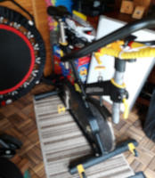

For our first video review we'll start with one of my favourites.
Around Port Phillip bay in Melbourne. Organised by "Raceatlas".
It's one of the most popular events with thousands of cyclists taking part,
with the 210 kilometre
ride the most popular. The atmosphere at the start of the video is brilliant
and the music really motivates you. It starts in the early morning darkness
with a 10 minute warm up. Towards the end of the warm up the music builds up
in readiness to psych you up for the coming threshold effort. You can decide
if you want to ride in zone 3 or 4 depending on how your feeling as these
intervals are 8 minutes long (X3) with 3 x 2 minute recoveries. Recovery
music is gentle and builds up again for each effort. Music during the
efforts is really motivating and encourages you to try hard. The last
effort section is a lone rider giving you the impression you are riding
in time trial mode, and it works brilliantly. I spend most of the last
8 minutes on the tri-bars. Then it's a nice steady cool down with nice
chill out music. Recommended cadence I'd say is 90-100 revs with maybe
80-90 revs for the last section.
Comment below on social media
Your workout today
How was your indoor workout today? Post your video or your workout stats here.
This is what i did today!
Comment below on social media
A tour of Saarland, Germany
A lovely sunny day here no matter what the weather at home.
A great scenic ride with a few small climbs. Nice steady start, allowing you
to warm up nicely before the first climb and increasing that resistance knob.
Good mixture of slower revs for the hills (70-80) and faster revs (100-110) for
the downhills. Saarland is a forested, southwestern German
state bordered by France and Luxembourg. Named after the Saar
River, a tributary of the Moselle, Saarland is considered part
of the greater Moselle wine region. Its capital of Saarbrücken
is known for the Saarland Museum and the baroque-style Ludwig’s
church. In the nearby town of Völklingen, a restored 19th-century
ironworks now offers modern art exhibitions and concerts.
Comment below on social media
It's only 25 minutes!
Suitable for intermediate and advanced riders.
Don't be fooled by this short workout. It is hard and requires full concentration.
Every second counts and the warm up is short, so your strait into it.
Working up from low to medium resistance with a couple of minutes.
Getting the revs up early. Don't burn out too quickly so pace yourself on
the intervals. The cool down at the end is also very short. If you have
time then cool down for longer.
The GCN team produce fantastic videos whether it's indoor
cycling, outdoor cycling or reviewing the newest gadgets.
Comment below on social media
Sunny Cambrils
Suitable for beginners or recovery.
In your road to fitness it's good to start with something easy and pleasing to
the eye, so this lovely short sunny coastal ride is just the start you need. Starting
from the hotel, the girls take us along the cycle path of
the lovely town of Cambrils. This is an easy or fat burning
ride with relaxing music. Ideally 90 revs per minute should be
just fine with a low to medium amount of resistance.
Quick facts:
Cambrils is a coastal town in the comarca of Baix Camp, province of Tarragona, Catalonia, Spain.
The town is near the tourist town Salou and is frequently visited by those travelling by air using Reus Airport.Wikipedia
Comment below on social media
What's your spin bike?

Send in a pic to our Facebook page of your static bike or indoor trainer setup
with a brief description and what you like best about it. Here is mine!
It's a Lemond Revmaster pro commercial bike. Best spin bike I've ever had.
Greg Lemond was the first American ever to win the tour de France in 1986.
Lemond merchandise includes racing bikes, frames, home
trainers and spin bikes.